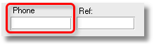
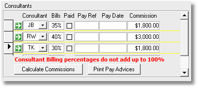

|
|
PRS News & Tips | October 2009 |
Latest News
We’ve just released PRS 8.0.0, it runs on Windows 7 and is a major release in terms of both user functionality and scalability.
What’s new in Version 8
Message Merge tool
 in version 8.0.1
in version 8.0.1
The Message Merge tool is used to send Email or SMS message en masse to selected candidates and clients. It is fully integrated with the PRS Mail Templates. See our February 2010 newsletter for usage examples.
Maximise long lists to full-screen
in version 8.0.1
The following floating windows can now be resized and maximised to full-screen: Roster Tool, InBox Tool, Messages Tool, Reminders, Unpaid Invoices.
Very handy when working with long lists.
Just click the window maximise button or double-click the window title bar.

Street address Goto buttons
Clicking the Goto buttons next to street addresses on the Personnel and Site forms will display the location in a Google street map.

Smart phone number searches
Ever been handed a phone number and wanted to know who it was that called? You can now search for phone numbers using the Find command on the Personnel and Sites forms. Just enter the number or just the last few digits of the phone number and the PRS will search all the phone number fields, automatically ignoring non-numeric characters such as spaces and dashes.

Search Vacancies by Job Title
A Job Title wildcard search has been added to the Vacancies Find command.
Enhanced and extended Mail Templates
-
Mail Templates can now be used with SMS messages.
-
You now have the option of sending Vacancy Activity messages as Email or SMS.
-
Updating the Filled by field on the Vacancies form now optionally prompts the user to send a customisable Placed message to the candidate; you also get the opportunity to notify the client.
-
The number of Mail Template placeholders has been doubled.
-
A Restore Defaults command has been added to the Mail Templates dialog (Tools→Settings→Mail Templates) — it allows you to add the example mail templates that we have written to your existing mail templates.

Enhanced Consultant Client/Candidates Tool
-
You can now select and reassign just client or just candidates from the Client/Candidates Ownership tool (Tools→Client/Candidates Ownership).
-
The Client/Candidates Ownership tool displays the number of candidates and clients assigned to the consultant.

Messages inclusion in Email replies has been enhanced
-
Instead of being prompted if you want to include the sender’s email (when using the InBox Tool to reply to emails) an Include sender’s message checkbox has been added to the mail message form, it can be selected by default by ticking the Include sender’s message in replies checkbox on the Mail page of the PRS Tools→Options dialog.
-
The sender’s message is added to the end of the mail message after your signature and, in the case of HTML mail messages, is nicely formatted.
Note Types can now be edited
The Tools→Settings→Notes Types command now supports renaming and deleting Note Types.
This feature requires the PRS8 Shared Data upgrade.
Smoother entry of vacancy billing splits
When consultant commissions don’t add up to 100% (on Page 2 of the Vacancies form the PRS generates a red warning message rather than complaining noisily every step of the way.

Mail and Notes archiving
Old mail and notes can be moved from the database to separate archive files, this will both reduce the size of your database and improve Notes and Mail tool performance. Pressing the Options button on the Mail Archive and Notes tools opens a dialog containing commands to Create, View and Restore note and mail archives.
This feature requires the PRS8 Shared Data upgrade.
Other enhancements
-
Vacancy skills and vacancy billers are now copied when you select the Copy current vacancy details option when creating a new vacancy.
-
Notes now open with single click of mouse button.
-
Roster Tool sorts in reverse chronological order.
-
Added the ability to set Document Search folder anywhere in the Documents folder (the indexed documents folder can be specified separately on the File locations page of the Tools→Options dialog).
-
Existing Timesheets and New Timesheets forms now float.
-
Added Source selection option to Mail Messages tool Select command.
-
You can now reply to incoming Email messages that have been saved in the Mail Messages tool (a Reply button has been added to the Received Mail Message form).
-
Summary information has been added to the Vacancy Roster form.
See the PRS Changelog for the full list of the changes and bug fixes since the previous release.
Scalability and Performance
The evolution of the PRS’s integrated Email and SMS messaging capabilities has resulted in dramatically increased usage — nowadays it’s not unusual for archived messages to occupy 90% or more of the database. For example 100,000 mail messages typically occupy around 500MB, 250,000 notes occupy around 100MB with all the remaining data typically occupying less than 60MB.
In late 2008 it became clear that large PRS databases (1000MB or more) needed some way to archive and manage both mail and notes (in order to improve their performance and scalability). PRS version 8 achieves these objectives by splitting mail and notes into separate database files and introducing integrated mail and notes archiving features. These changes are transparent to the user.
The upgrade procedure is documented on the PRS website.
Tips and Tricks
How to always include the sender’s message with a reply
If you’re tired of always clicking the Include sender’s message when you are replying to an Email from the InBox Tool you can set it checked by default by ticking the Include sender’s message in replies checkbox on the Mai page of the PRS Tools→Options dialog.
Assign Vacancy Activities from the Personnel form
When you’re working with candidate records you don’t have to go to the Vacancies form to assign a new Activity, just click the Activity command item in the Personnel form’s sidebar menu then click the Goto button next to the vacancy to edit the candidate activity.
Zoom in on hidden text
Use the Shift+F2 key combination to display all the text in a field. This is useful, for example, for viewing long document names.
Quickly add items to the Goto List
-
Use the Find command to select the set of records you want in the Goto List.
-
Roll your mouse wheel from the first record to the last, it’s that easy.
You can use this technique on the Personnel, Vacancies, Invoices and Sites forms.
Need help?
-
Our Support web page explains how to get answers to PRS questions and includes links to articles on Maintaining Database Reliability and Performance and PRS Best Practice Deployment.
-
Don’t forget to check out our PRS Training Videos.
|
Important
|
If you no longer wish to receive this newsletter please email support@methods.co.nz with the word UNSUBSCRIBE in the subject line. |